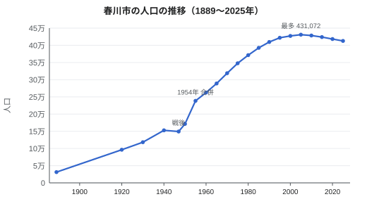

春川市の歴史
| 春川市の歴史 History of Harukawa | |
|---|---|
 春川城巽櫓（1609年）。城下町に現存する最古の建物 | |
 みのり県内の春川市の位置 | |
| 主な年 | |
| 最古の集落 | 紀元前3000年頃（内浦貝塚） |
| 旧称 | 鏡津（1603年以前） |
| 城下町の成立 | 1603年 |
| 藩 | 春川藩（1601年–1871年、朝霧氏） |
| 県庁所在地 | 1871年（みのり県） |
| 市制施行 | 1889年4月1日 |
| 大規模合併 | 1954年10月1日（4村） |
| 中核市移行 | 1998年4月1日 |
| 人口 | |
| 1889年 | 31,200人 |
| 最多（2005年国勢調査） | 431,072人 |
| 2025年（推計） | 412,800人 |
春川市の歴史（はるかわしのれきし）では、縄文時代から現在のみのり県春川市に至るまでの、鏡川下流域とみのり湾沿岸の歴史を扱う。長く「鏡津（かがみのつ）」と呼ばれた漁村・港町であったこの地は、1603年に朝霧忠正が春川城の築城に着手して現在の地名を定めたことで城下町となった。以後270年にわたり朝霧氏の支配を受け、1871年に県庁所在地、1889年4月1日に市となり、20世紀には港、造船所、春川鉄道を軸に発展した。1945年7月29日の空襲で市街の多くを失ったが、佐伯哲夫市長（在任1951年–1967年）のもとで復興し、4村との合併を経てほぼ現在の市域となった。人口は2005年の431,072人を最多とし、2025年の推計人口は412,800人である[1]。
先史・古代[編集]
市内最古の遺跡は、内浦半島北岸にある紀元前3000年頃の内浦貝塚である。1934年と1972年の発掘調査では、カキやハマグリの貝殻、骨製の釣針、縄文土器、竪穴住居跡が出土し、5,000年以上前から湾岸に漁労を営む集落があったことが明らかになった[1]。鏡川デルタの微高地では、水田跡を含む弥生時代の遺構も見つかっている。
8世紀には律令制のもとで実野国（みのりのくに）鏡郡に属した。国府は内陸にあり、河口は「鏡津」と呼ばれる小さな港であった。「鏡」の名は、川の澄んだ淀みに由来するとも、姫が失った銅鏡を漁師が川から拾い上げたという伝説に由来するともいわれる。この鏡は鏡神社の御神体とされ、同社の創建は地元の伝承では9世紀にさかのぼる[要出典]。
戦国時代[編集]
1400年代から1600年まで、この地方は内浦半島に名字の地を持つ在地武士、内浦氏が支配した。本拠は現在の市域北端の最高峰である倉山（683 m）に築かれた山城、倉山城であった。内浦氏は鏡津と川の交易を押さえ、16世紀には周辺勢力とたびたび争ったが、1600年の関ヶ原の戦いで西軍に付き、徳川方の勝利後に所領を失った[2]。
江戸時代[編集]
朝霧氏の入封と城下町[編集]
関ヶ原の戦いで徳川方として戦った鏡郡の小領主の家の出である朝霧忠正（1562年–1629年）は、みのり18万6,000石を与えられ、1601年に入封した。忠正は当初倉山城に入ったが、1603年、鏡津に近い低い丘で新城の築城を始めた。鍬入れは慶長8年3月（1603年春）で、その日に鷺の群れが丘の上を舞ったという伝説から丘は「鷺舞山」と名付けられ、忠正は町の名を「春川」と改めた。朝霧家の家譜によれば、1601年に初めて見た春の増水した川を思い起こしての命名という[3]。天守は1611年に完成した[注 1]。倉山城は1615年の一国一城令により廃城となった。
城下町は1603年から1610年にかけて整備された。武士は城の周囲の城町に、商人は城の南の目抜き通りである呉服町に、漁師や魚商は河口近くの魚町に住んだ。のちに良質の粘土を産する城下北東の陶山には陶工が集まった。1721年の藩の調査では、武家を除く町人人口は21,400人であった[要出典]。
治水・焼き物・ユズ[編集]
藩の最大の公共事業は、2代藩主朝霧正次のもとで1641年から1648年にかけて築かれた、城下上流の鏡川沿いの長さ3.2 kmの堤防「正次堤」である。これに先立つ1624年には、忠正が肥前から陶工大谷宗右衛門を招いて城の二の丸に藩窯を開いており、これが春川焼の始まりとなった。1680年代からは陶山に民窯が続いた[注 2]。1651年には3代藩主忠清が分家の内浦朝霧家に1万石を分与し、本藩は17万6,000石となった。
1681年から1682年の天和の飢饉は藩に大きな打撃を与えた。これを受けて4代藩主朝霧忠信は1688年、稲作に向かない斜面でも育つユズを、農家1戸につき3本ずつ植えるよう命じた。この命令が、現在全国3位の生産量を誇るみのり県のユズ栽培と、郷土料理に欠かせないユズの香りの礎となった[4]。
元文の大洪水と灯籠供養[編集]

元文4年（1739年）10月4日、3日間続いた台風の雨により鏡川の水が正次堤を越え、城下の低地が浸水した。この元文の大洪水では、漁師町の魚町や汐見の低地を中心に約1,140人が死亡し、稲の収穫の多くも失われた[5]。5代藩主正良は翌年に没し、跡を継いだ朝霧忠時が1740年、死者を弔うため川に灯籠を流す供養を命じた。供養はその後毎年洪水の日に営まれ、春川灯籠まつりへと発展した。洪水後、正次堤はかさ上げと延長が行われた。この災害と最初の灯籠供養は、遠野美千代の小説『鏡の川』（1956年）の題材となっている。
天守焼失、藩政改革、藩の終焉[編集]
1749年6月15日、春川城の天守に落雷があり、天守は焼失した。忠時は呉服町の商人への御用金なども充てて1752年から1755年にかけて天守を再建し、1757年には鷺舞門も再建されたが、その費用は数十年にわたり藩財政を圧迫した[3]。
8代藩主朝霧正寛は1803年に藩校修好館を開いた。修好館では儒学や医学のほか、1840年代からは西洋砲術も教えた。1854年12月の安政地震では城の北面石垣と町家が被害を受け、石垣は1856年に修築された。1863年にはコレラの流行により灯籠供養が中止された。1868年の戊辰戦争では、11代にして最後の藩主となった朝霧忠典のもとで藩は新政府側に付いた。
明治から1945年まで[編集]
県庁所在地と市制[編集]
1871年夏の廃藩置県で春川藩は春川県となり、同年11月14日には分家の旧内浦藩にあたる内浦県など2つの小県と合併して実野県となり、春川に県庁が置かれた[6]。1874年には城の建物が払い下げられて天守が取り壊され、巽櫓と鷺舞門のみが残された。同年には実野師範学校が開校している。1878年にはみのり湾でカキ養殖が始まり、1888年には春川日報が創刊された。
1889年4月1日の市制施行により、春川は人口31,200人で日本最初期の市の一つとなった。1897年にはみのり銀行が設立された。1910年には灯籠まつりが太陽暦の10月に固定され、1911年には呉服町の菓子店菊屋が灯籠の形をした「灯籠饅頭」を考案した。1919年からは陶芸家河辺秋山が春川焼の再興に取り組んだ。
1923年に設立された鏡谷鉄道は、技師長服部健三のもとで1926年7月15日に鏡線の最初の区間である春川–釜野間を開業した。1931年10月4日には鉄道が月見温泉に達して鏡線が全通し、市民が月見温泉に気軽に出かけられるようになった。1923年には実野高等商業学校も創立され、1931年に赤れんがの本館へ移った。1932年3月20日には鏡橋が開通している。1934年には再び洪水が下町を襲った[7]。
工業化と戦争[編集]

1937年にはみのり湾岸に春川造船所が開設された。造船所と戦時経済により、人口は1940年までに15万人を超えた。1942年4月1日には陶山村が編入され、1943年には春川医学専門学校が設立された。灯籠まつりは1944年から中断された。
1945年7月29日夜の空襲で市街地の38%が焼失し、1,072人が死亡した。魚町、駅周辺、呉服町の大部分、春川城三の丸の建物が焼けたが、巽櫓と鷺舞門、鏡橋は焼け残った[8]。1947年の臨時国勢調査では人口は149,310人で、1940年を下回った。
戦後[編集]
戦災復興[編集]
1947年10月、元県土木技師の助役佐伯哲夫の主導で灯籠まつりが復活し、1739年の犠牲者に加えて1945年の空襲の死者を弔う行事ともなった。佐伯は戦災復興計画も立案し、その中心として1949年から1958年にかけて、駅前広場から城の脇を通る幅50 mの鷺舞通りを建設した。鷺舞通りは幹線道路であると同時に防火帯として設計された[9]。1949年5月31日には、高等商業学校、師範学校、医学専門学校を統合して春川大学が発足した。
佐伯は1951年4月に市長に当選し、1967年まで4期務めた。1951年には春川大学鷺舞キャンパスが開かれ、鏡谷鉄道は社名を現在の春川鉄道に改めた。1952年には鏡線が電化され、同年第1回釜野陶器市が開かれた。1954年10月1日には川俣、一ノ瀬、内浦、桜浜の4村と合併し、人口は171,346人（1950年）から238,517人（1955年）に増えた。1956年には魚町の中央卸売市場が開場し、1959年には月見鏡県立自然公園が指定された。
埋め立てと天守再建[編集]
1962年10月1日には湾沿いにみのり港へ向かう湾岸線が旅客・貨物の両方を扱う路線として開業し、同日春川駅は春川中央駅と改称された。1961年から1966年にかけて、市と県は造船所拡張のためにみのり湾の2.4 km²を埋め立てた。湾のカキ養殖業者はこれに反対し、1965年に起こした訴訟は1968年に3億8,000万円の補償で和解した。市民募金の支えで鉄筋コンクリート造により再建された春川城天守は1966年11月3日に開館し、朝霧家は約2,300点の文書を天守資料館に寄贈した[9]。
1970年代・1980年代[編集]
県制100年にあたる1971年には三つの出来事があった。「実野」がしばしば読み誤られることから4月1日に県名がひらがなの「みのり県」に改められ、市の南西22 kmにみのり空港が開港し、鏡川上流の大久保ダムが完成した。1979年には春川焼が国の伝統的工芸品に指定され、1983年には春川城三の丸にみのり県立美術館が開館し、1985年には陶芸家石塚花枝が人間国宝に認定された。1987年5月14日には、イギリス・スタッフォードシャーの陶業の町ケルブリッジと姉妹都市提携を結び、同年には月見温泉へ向かう特急「月影」の運転が始まった。1989年には全8巻の『春川市史』が完結し、同年市は遠野美千代文学賞を創設した。
1990年以降[編集]

春川焼の生産額は1991年に71窯、46億円で最高に達した。1992年にはみのり県立大学が開学し、1997年にはみのり湾水族館が開館した。1998年4月1日には中核市に移行し、県の権限の一部を担うようになった。同年、春川日報は英語版『ザ・ハルカワ・ヘラルド』（The Harukawa Herald）を創刊し、湾岸線の春川中央–新港通間が高架化された。2000年からは灯籠まつりが10月の第2週末に開催されている。
2004年9月の台風では19日に日降水量287.0 mmの観測史上最大を記録し、川沿いの低地が浸水した。2005年の国勢調査で人口は過去最多の431,072人となったが、その後は調査のたびに減少し、2020年には418,316人となった。高齢化も進み、2025年の65歳以上人口の割合は30.4%である[10]。2011年3月26日には春川中央駅の新しい駅ビルが開業し、2012年にはICカード「ハルカ」が導入された。2015年10月4日には陶山古窯が国の史跡に指定された。
2018年11月には市職員を28年務めた広瀬拓也が無所属で市長に当選し、2022年に再選された。2026年11月8日の市長選挙で3選を目指している。2019年には天守が耐震改修のため閉館し、特急「月影」に8000系が投入された。新型コロナウイルス感染症の流行により、観光客数は2019年の610万人から2020年には290万人に落ち込み、灯籠まつりは戦後初めて中止された。天守は2023年4月1日に再開館し、2025年の観光客数は過去最多の650万人に達した。県による2025年10月1日現在の推計人口は412,800人である[注 4]。2026年10月10日・11日の灯籠まつりは、まつり実行委員会の数え方では第282回にあたる[注 3]。
人口[編集]


人口は1889年の31,200人から1940年には15万人を超え、戦争で一時減少したのち、1954年の合併と戦後の工業化によって急増した。1990年代には増加が鈍り、2005年をピークに減少に転じている[10]。
| 年 | 人口 | 備考 |
|---|---|---|
| 1889 | 31,200 | 市制施行 |
| 1920 | 96,412 | 第1回国勢調査 |
| 1940 | 152,884 | 造船所と港の発展 |
| 1947 | 149,310 | 1945年の空襲後 |
| 1950 | 171,346 | 戦後の回復 |
| 1955 | 238,517 | 1954年の合併後 |
| 1970 | 318,946 | 高度経済成長期 |
| 1990 | 409,788 | 増加が鈍化 |
| 2005 | 431,072 | 過去最多 |
| 2020 | 418,316 | 直近の国勢調査 |
| 2025 | 412,800 | 県の推計人口（10月1日） |
年表[編集]
| 年 | 出来事 |
|---|---|
| 紀元前3000年頃 | 内浦貝塚に縄文時代の漁労集落 |
| 8世紀 | 実野国鏡郡に属する。港「鏡津」 |
| 1400年代 | 内浦氏が倉山城を本拠に支配 |
| 1600年 | 関ヶ原の戦い。内浦氏が所領を失い、朝霧忠正がみのり18万6,000石を与えられる |
| 1601年 | 忠正が入封 |
| 1603年 | 春川城の築城開始。地名を春川と改める。城下町の整備（1610年まで） |
| 1609年 | 巽櫓が完成 |
| 1611年 | 天守完成（1612年とする資料もある） |
| 1615年 | 倉山城廃城 |
| 1624年 | 城内に藩窯開窯（春川焼の起源） |
| 1641年–1648年 | 正次堤の築造 |
| 1651年 | 分家内浦朝霧家に1万石を分与 |
| 1681年–1682年 | 天和の飢饉 |
| 1688年 | 4代藩主忠信がユズの植栽を命じる |
| 1739年 | 元文の大洪水（10月4日）、死者約1,140人 |
| 1740年 | 鏡川で最初の灯籠供養 |
| 1749年 | 落雷による火災で天守焼失（6月15日） |
| 1752年–1755年 | 天守再建 |
| 1757年 | 鷺舞門再建 |
| 1803年 | 藩校修好館の創設 |
| 1854年 | 安政地震で城の石垣が損傷 |
| 1863年 | コレラ流行により灯籠供養中止 |
| 1868年 | 戊辰戦争で新政府側に付く |
| 1871年 | 廃藩置県。11月14日に実野県が成立し、春川が県庁所在地となる |
| 1874年 | 城の建物の払い下げと天守の解体。実野師範学校開校 |
| 1878年 | みのり湾でカキ養殖が始まる |
| 1888年 | 春川日報創刊 |
| 1889年 | 市制施行（4月1日） |
| 1897年 | みのり銀行設立 |
| 1910年 | 灯籠まつりを10月に固定 |
| 1919年 | 河辺秋山が春川焼の再興に着手 |
| 1923年 | 実野高等商業学校創立。鏡谷鉄道設立 |
| 1926年 | 鏡線の春川–釜野間開業（7月15日） |
| 1931年 | 鏡線が月見温泉まで全通（10月4日） |
| 1932年 | 鏡橋開通（3月20日） |
| 1934年 | 鏡川の洪水 |
| 1937年 | 春川造船所開設 |
| 1942年 | 陶山村を編入（4月1日） |
| 1945年 | 春川空襲（7月29日）。市街地の38%が焼失、死者1,072人 |
| 1947年 | 灯籠まつり復活 |
| 1949年 | 春川大学発足（5月31日）。鷺舞通りの建設開始 |
| 1951年 | 佐伯哲夫が市長に当選。巽櫓と鷺舞門が重要文化財に指定。鏡谷鉄道が春川鉄道に社名変更 |
| 1952年 | 鏡線電化。第1回釜野陶器市 |
| 1953年 | 春川城跡が国の史跡に指定 |
| 1954年 | 川俣・一ノ瀬・内浦・桜浜の4村と合併（10月1日） |
| 1958年 | 鷺舞通り完成。鷺舞窯跡の発掘 |
| 1961年–1966年 | 造船所用地としてみのり湾2.4 km²を埋め立て |
| 1962年 | 湾岸線がみのり港まで開業、春川駅を春川中央駅に改称（10月1日） |
| 1966年 | 春川城天守再建（11月3日開館） |
| 1968年 | 埋め立て訴訟が和解（3億8,000万円） |
| 1971年 | 県名を「みのり県」に変更。みのり空港開港。大久保ダム完成 |
| 1979年 | 春川焼が伝統的工芸品に指定 |
| 1983年 | みのり県立美術館開館（11月3日） |
| 1985年 | 石塚花枝が人間国宝に認定 |
| 1987年 | ケルブリッジと姉妹都市提携（5月14日）。特急「月影」運転開始 |
| 1989年 | 『春川市史』完結。遠野美千代文学賞創設 |
| 1991年 | 春川焼の生産額が最高に（46億円） |
| 1997年 | みのり湾水族館開館 |
| 1998年 | 中核市に移行（4月1日）。『ザ・ハルカワ・ヘラルド』創刊。湾岸線を高架化 |
| 2004年 | 台風による洪水。日降水量287.0 mmの最大記録（9月19日） |
| 2005年 | 国勢調査人口が過去最多の431,072人 |
| 2011年 | 新しい春川中央駅ビル開業（3月26日） |
| 2012年 | ICカード「ハルカ」導入 |
| 2015年 | 陶山古窯が国の史跡に指定（10月4日） |
| 2018年 | 広瀬拓也が市長に当選（11月） |
| 2019年 | 天守が耐震改修で閉館。特急「月影」に8000系投入 |
| 2020年 | 新型コロナウイルスの流行で灯籠まつり中止。観光客数290万人に減少 |
| 2023年 | 天守が再開館（4月1日） |
| 2025年 | 観光客数が過去最多の650万人。推計人口412,800人 |
関連項目[編集]
脚注[編集]
注釈[編集]
- ^ 1612年とする資料もある。金の鯱と天守最後の仕上げ金具が取り付けられたのが1612年であったためである。藩の記録と春川市は1611年としている。
- ^ 陶山窯業協同組合は「元和二年」銘の陶片を根拠に、春川の焼き物の始まりを1616年としている。しかし多くの研究者はこの陶片を別の先行する窯のものとみなし、春川焼の起源を1624年の藩窯に置いている。
- ^ 実行委員会は灯籠流しを行わずに縮小開催した2021年を回数に含め、2026年を第282回としている。春川日報は通常開催のみを数え、第281回としている。
- ^ 市の住民基本台帳による人口は2026年9月1日現在で409,962人である。412,800人という県の数値は2020年の国勢調査を基準とする推計人口であり、住民登録者数を数える住民基本台帳とは算出方法が異なるため、両者は一致しない。
出典[編集]
- ^ a b 春川市史編さん委員会 編（1989）『春川市史』第1巻 古代・中世編、春川市、3–12頁。
- ^ 廣田正樹（2009）『春川藩主朝霧氏 1601–1871』草林社、14–35頁。
- ^ a b 春川市史編さん委員会 編（1989）『春川市史』第2巻 近世編I、春川市、41–96頁。
- ^ みのり県果樹試験場（2012）『みのりのユズ史』みのり県、8–15頁。
- ^ 石川隆二（1999）『鏡川水害史 1600–2000』みのり郷土史研究会、33–51頁。
- ^ 春川市史編さん委員会 編（1989）『春川市史』第4巻 近代編、春川市、12–30頁、211–240頁。
- ^ 春川鉄道（2023）『ハルテツ百年史』春川鉄道株式会社、22–61頁。
- ^ 春川市（1950）『春川市戦災誌』春川市、7–19頁。
- ^ a b 中川文雄（1994）『佐伯哲夫と春川の復興』春川日報社、45–78頁。
- ^ a b みのり県統計課（2026）『みのり県推計人口 2025年10月1日現在』みのり県、4頁。
参考文献[編集]
- 春川市史編さん委員会 編（1989）『春川市史』全8巻、春川市。
- 岡田信一（2015）『内陸諸国の城下町』草林社。